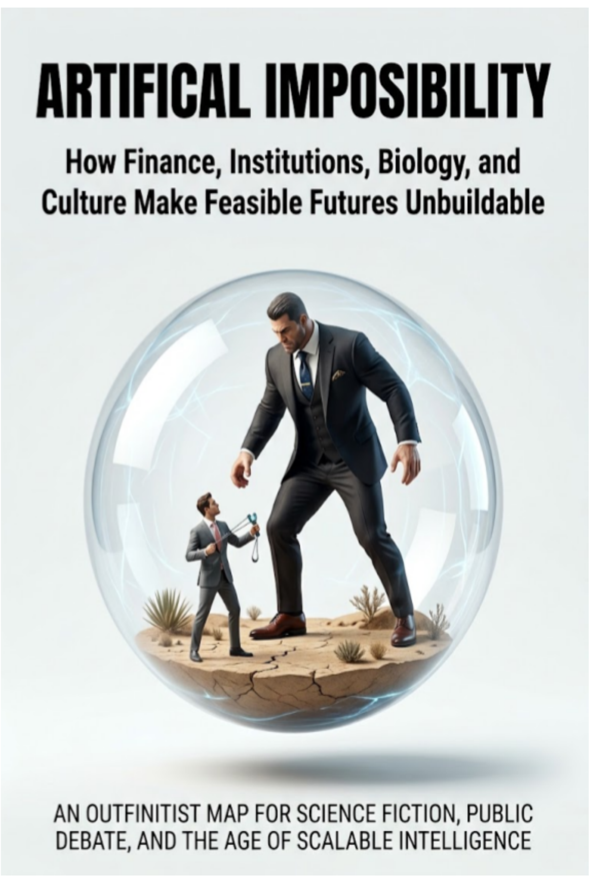

Business & Startups · Axiologic Research Editions
Artificial Impossibility
How Finance, Institutions, Biology, and Culture Make Feasible Futures Unbuildable
A prevention system succeeds by eliminating future customers. An open public AI creates value no investor can fully capture. A dangerous technology remains irresistible because every rival fears restraint. These projects are not impossible in nature; they are blocked by institutions whose individually rational decisions combine into a future nobody deliberately chose.
Feasible, yet institutionally homeless
Artificial Impossibility begins where ordinary stories of progress stop. A project may be scientifically plausible, socially valuable and capable of a working prototype, yet fail to find a payer, fit a grant category, survive procurement, obtain liability cover or receive legitimate authority. The obstacle is neither fantasy nor a simple technical defect. It is the way several selection systems, each behaving reasonably within its own mandate, can leave a useful future without a sponsor.
The examples range from preventive medicine and public artificial intelligence to automated scientific review, collective ownership of robots and systems designed to restrain dangerous races. Their surface differences conceal recurring structures: capital that cannot want every valuable thing, benefits that disappear when monetised, responsibility gaps, veto asymmetries and forms of status or identity that make transition costly.
A map, not a conspiracy theory
The book does not ask readers to choose between markets and planning, innovation and regulation, or optimism and fatalism. Venture investors, reviewers, regulators, managers and voters can all be conscientious while their combined incentives fail to support a project. A named barrier can be necessary, protective or unjustified; the point is to locate it precisely enough to debate whether it should be preserved, redesigned or tested.
Its Outfinitist frame treats limits as real but potentially movable. It distinguishes physical impossibility from institutional refusal, while also resisting the temptation to treat every friction as a defect. Privacy, due process and democratic authorization may make a path slower because speed is not the only value at stake.
Local rationality can produce global absence: a future everyone can describe, but no institution can responsibly build.
The right question for future builders
For founders, funders, policy-makers and builders working around AI, the book offers a sharper diagnostic than “the idea is unrealistic.” Which mechanism blocks the project? Does it need a different ownership model, funding rule, legal mandate, responsibility allocation or reversible experiment? And which limits should remain, because the thing being protected matters more than the gain?
That is the practical value of the map. It makes the institutional design problem visible before technology is mistaken for destiny or dismissed as impossible simply because the present has no category for it.